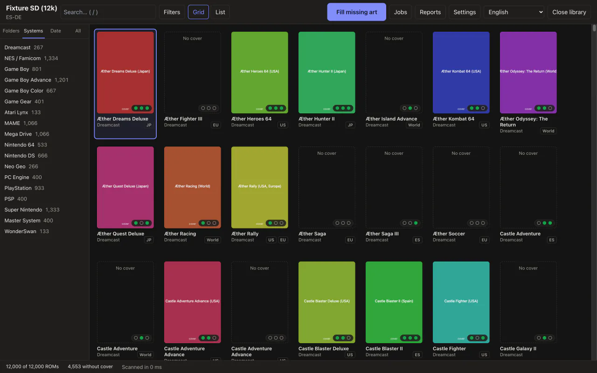
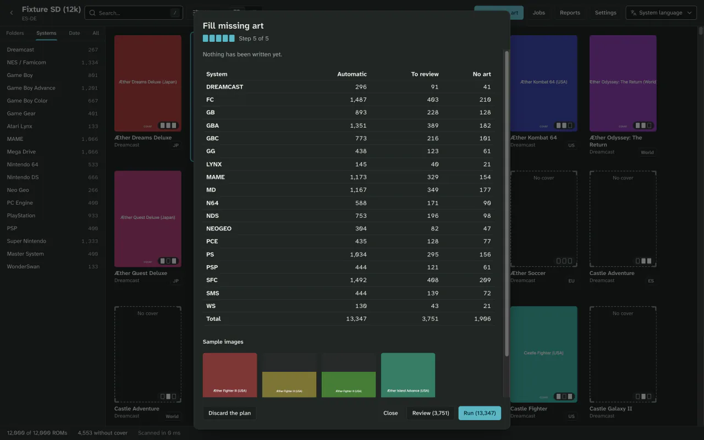
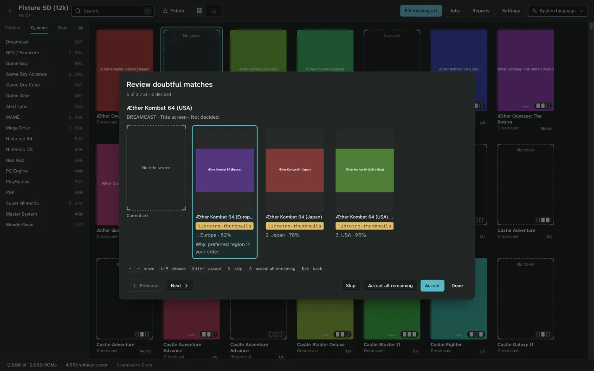
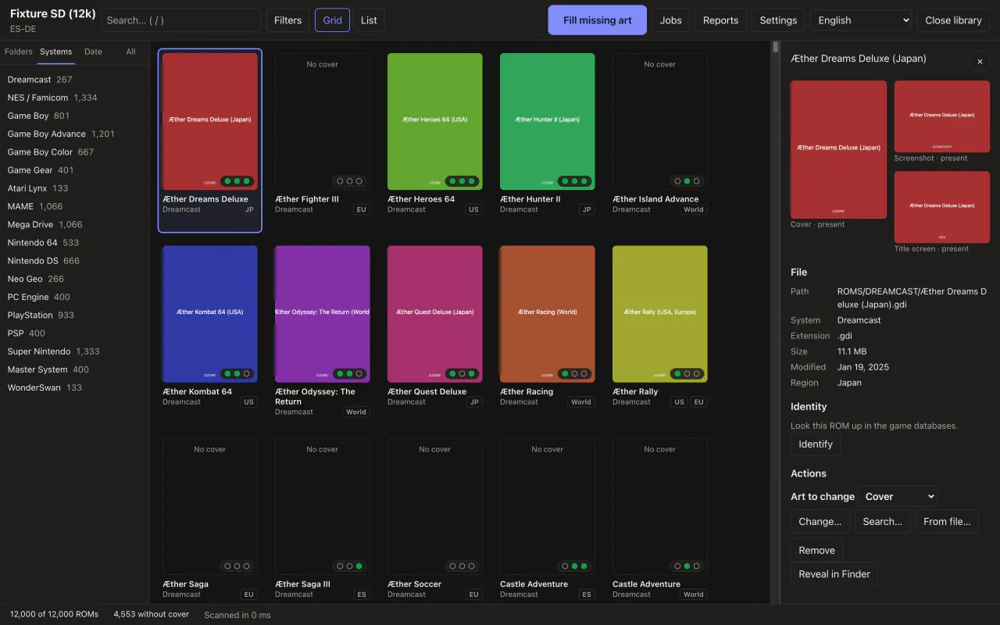
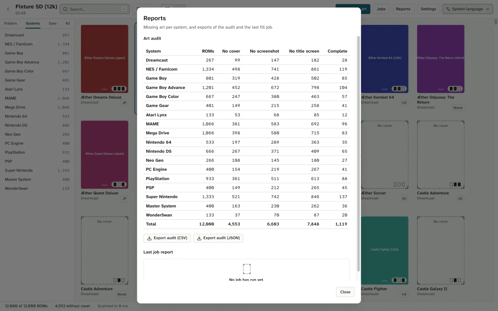

Every ROM gets its cover.
Coverly ROMs checks your handheld's SD card, shows which games have no cover art and adds it in one go. It rehearses first, and nothing you already have is touched unless you say so.
And while it's there, it sorts your downloads into 131 systems and sets aside the games you have twice.
- Free
- No account
- No telemetry
- 131 systems
- Windows, macOS and Linux
Four steps. The first two write nothing.
-
Open the card.
Coverly recognises your firmware and counts what each system is missing: cover, screenshot or title screen.

-
Dry run.
It identifies each ROM by its fingerprint and shows you the whole plan. Nothing is written yet.

-
Decide the doubtful ones.
Confident matches go through; doubtful ones wait in a queue you walk with the keyboard, and each says why.

-
Apply, or undo.
Images are written one at a time. Undo puts the card back as it was.

Your card comes back as it was, plus covers.
3 covers added. The one you replaced is copied off the card.
- Dry run by default
- Writing is something you ask for. On the command line, with
--apply. - Only what is missing
- Covers you already have stay unless you choose to replace them, and then a copy is kept first.
- Backups off the card
- Copies and each job's log go to the app's data folder, not to the SD card.
- Nothing outside the library
- It never writes outside the folder you opened, and file names stay valid on FAT and exFAT.
- One failure stops nothing
- If one ROM fails, the rest carry on. Offline or rate-limited, the job pauses and you resume it later.

And it picks each cover well.
- libretro-thumbnails
- SteamGridDB
- The game itself
- By fingerprint.
- It recognises each ROM by CRC32, MD5 or SHA1, not only by name, and understands arcade short names.
- In your region.
- It prefers the cover from the ROM's region, or follows the source order you choose.
- Even when nobody has it.
- If no source has a cover, it uses the icon the game carries on PS3, PS Vita, Wii U, 3DS and Xbox 360. On PS4, PS5, Xbox One and Xbox Series it tries that first.
- With the name RetroArch looks for.
- Titles with “&” or “:” are saved the way RetroArch looks for them, so it finds them.
- By hand, game by game.
- From the game's panel you change, remove or search for another image, or use your own.
- You know how long.
- While it fills, you see covers per minute and the time left.
More than covers.
Around the covers, Coverly ROMs has learned to tidy the library. Everything is a dry run first and can be undone.
Sorts by system, archives too.
It recognises zip, 7z, RAR and more by what's inside. It extracts disc games checking each track's CRC, moves folder games (PS3, Vita, Wii U, PS4…) as one item and groups loose multi-disc games with their .m3u.
Current consoles, no keys.
Switch, 3DS, PS4, PS5 and Xbox One are recognised from what's stored in the clear. Coverly never reads or asks for keys, and leaves your licence files where they are. Switch names come from the file itself or, if you turn it on, from a public catalogue.
Sets aside repeated copies and deletes nothing.
It finds the same game stored more than once in a system by its contents, never by its name. One copy stays, picked by rules you can reorder, with the reason shown. It also catches copies with the same title ID and version, or the same folder.
The others go to _Duplicados/ inside the library, with their saves and art, or to the Trash if you choose. If two copies have different saves, it touches neither. Undo puts everything back.
Six views, and an icon for every system.
Switch between them with ⌘/Ctrl+1 to ⌘/Ctrl+6. Each library remembers its view, and every system has its icon in the sidebar, the filters and the reports.
Your keys, in one place.
In Settings, Integrations brings together SteamGridDB and the Switch catalogue: their status, “Test connection” and the official page where you get the key. Keys go to the system keychain, never to logs or exports.
Also: it asks before moving a game over 10 GB, it updates with signed versions, and in Settings, Credits lists the 62 sources and libraries it uses, with their licences. See every feature
It writes where your handheld looks.
Eight firmware and frontend layouts, detected when you open the folder, and 131 systems with the folder each one uses.
| Layout | Cover | Screenshot | Title |
|---|---|---|---|
| Anbernic stock | |||
| GarlicOS | |||
| Onion OS | |||
| MinUI and NextUI | |||
| muOS | |||
| ES-DE | |||
| Batocera, Knulli and EmulationStation | |||
| RetroArch |
On Batocera, Knulli and EmulationStation it also updates gamelist.xml, with undo. For other firmware, build your own layout with a live preview.
131 systems, each with its folder
See all 131 systems
Consoles 50
Nintendo 10
- Nintendo Entertainment System
- Famicom Disk System
- Nintendo 64
- Super Nintendo
- Nintendo 64DD
- Nintendo Satellaview
- Nintendo GameCube
- Nintendo Wii
- Nintendo Wii U
- Nintendo Switch
Sega 8
- Sega Dreamcast
- Sega Mega Drive / Genesis
- Sega CD / Mega-CD
- Sega Saturn
- Sega 32X
- Sega Master System
- Sega SG-1000 / SC-3000
- Sega Pico
Atari 5
- Atari 2600
- Atari 5200
- Atari 7800
- Atari Jaguar CD
- Atari Jaguar
Sony 5
- Sony PlayStation
- Sony PlayStation 2
- Sony PlayStation 3
- Sony PlayStation 4
- Sony PlayStation 5
NEC 4
- PC Engine / TurboGrafx-16
- PC Engine CD / TurboGrafx-CD
- NEC PC-FX
- PC Engine SuperGrafx
Microsoft 4
- Microsoft Xbox
- Microsoft Xbox 360
- Microsoft Xbox One
- Microsoft Xbox Series X|S
Commodore 2
- Commodore Amiga CD32
- Commodore CDTV
Other makers 12
- Neo Geo CD
- 3DO Interactive Multiplayer
- Philips CD-i
- ColecoVision
- Mattel Intellivision
- GCE Vectrex
- Magnavox Odyssey² / Videopac
- Fairchild Channel F
- Emerson Arcadia 2001
- Epoch Super Cassette Vision
- Bandai Sufami Turbo
- Uzebox
Handhelds 20
Nintendo 8
- Game Boy
- Game Boy Advance
- Game Boy Color
- Game & Watch
- Nintendo DS
- Pokemon Mini
- Virtual Boy
- Nintendo 3DS
SNK 2
- Neo Geo Pocket
- Neo Geo Pocket Color
Sony 2
- Sony PSP
- Sony PlayStation Vita
Bandai 2
- WonderSwan
- WonderSwan Color
Other makers 6
- Sega Game Gear
- Atari Lynx
- Watara Supervision
- Tiger Game.com
- Mega Duck / Cougar Boy
- Arduboy
Computers 27
Commodore 6
- Commodore Amiga
- Commodore 64
- Commodore VIC-20
- Commodore Plus/4
- Commodore PET
- Commodore 128
Atari 3
- Atari 8-bit
- Atari ST
- Atari XE / XEGS
MSX 3
- MSX
- MSX2
- MSX turbo R
Sinclair 2
- Sinclair ZX Spectrum
- Sinclair ZX81
Sharp 2
- Sharp X68000
- Sharp X1
NEC 2
- NEC PC-98
- NEC PC-88
Other makers 9
- DOS
- Fujitsu FM Towns
- Amstrad CPC
- Acorn BBC Micro
- Thomson MO/TO
- Dragon 32/64
- Tandy TRS-80 Color Computer
- Texas Instruments TI-99/4A
- Apple II
Arcade 15
- Arcade (various)
- Atomiswave
- Capcom Play System
- Capcom Play System II
- Capcom Play System III
- FinalBurn Neo
- HBMAME
- IGS PGM2
- MAME
- Namco Sega Nintendo Triforce
- Neo Geo
- Sega Model 2
- Sega Model 3
- Sega NAOMI
- Sega NAOMI 2
Engines, ports and fantasy consoles 19
- Cave Story (NXEngine)
- Dinothawr
- Doom (PrBoom)
- EasyRPG
- Flashback (REminiscence)
- LowRes NX
- Lutro
- Mr. Boom
- ONScripter
- OpenBOR
- PICO-8
- Quake
- Rick Dangerous (XRick)
- ScummVM
- Solarus
- TIC-80
- Vircon32
- WASM-4
- Wolfenstein 3D (ECWolf)
No system goes by that name. Try the console’s name or its folder (gba, snes…).
Coverly is not affiliated with or endorsed by Nintendo, Sony, Microsoft, Sega or any other maker. System names are trademarks of their owners, used here only to say what it works with. System icons adapted from RetroArch Assets (XMB Monochrome theme), © libretro contributors, CC BY 4.0. Changes: recoloured, optimised and cropped.
All of it, from the terminal too.
The coverly command does what the app does and can be scripted. Filling, sorting and setting duplicates aside are a dry run until you add --apply, and every report comes out as JSON if you ask.
audit- Counts what's missing. Read-only.
fill- Fills covers, screenshots and title screens.
organize- Sorts by system, with archives and discs.
dedupe- Sets repeated copies aside.
undo- Undoes the last job, or the later ones too.
catalog switch- Downloads, checks or removes the Switch name catalogue.
integrations- Lists, tests, saves or forgets keys, never showing them.
profiles, systems- Lists the layouts and the 131 systems.
update- Checks for and installs signed versions.
# What's missing (read-only)
$ coverly audit /Volumes/SD --missing-only
4553 missing covers
# The plan, nothing written
$ coverly fill /Volumes/SD
plan: 4553 · 0 written
# Now for real, skipping the doubtful ones
$ coverly fill /Volumes/SD --apply --auto-only
✓ 4401 applied# A downloads folder, onto the card
$ coverly organize ~/Downloads --target /Volumes/SD
plan: 212 into 31 systems · 0 moved
# Apply, and leave 10 GB or more for later
$ coverly organize ~/Downloads --target /Volumes/SD --apply --skip-large
extract item 2/4 files 5/16
✓ 209 sorted · 3 large ones skipped# Repeated copies, by their contents
$ coverly dedupe /Volumes/SD
38 extra copies across 17 games · 0 set aside
# Set them aside, delete nothing
$ coverly dedupe /Volumes/SD --apply
✓ 38 to _Duplicados/# The last job
$ coverly undo
↶ 4401 restored
# An earlier one, and those that came after
$ coverly undo --job 7 --include-later
↶ 2 jobs undoneA single binary for macOS, Windows and Linux, x64 and ARM64. Download the command line
How the alternatives compare.
For covers, it's the only one in the table that says it does a dry run and undo, on all three systems and without an account. And it also sorts and sets duplicates aside, with the same undo.
| Feature | Coverly ROMs | Skraper | Skyscraper | ARRM | Mini Scraper |
|---|---|---|---|---|---|
| Windows | Yes, x64 and ARM64 (beta) | Yes | — | Yes | Yes, x64 |
| macOS | Yes, Apple silicon and Intel | No native build | Build it yourself | No | Apple silicon only |
| Linux | x64 and ARM64 | Through Mono | Build it yourself | No | x64 |
| Desktop app | Yes | Yes | No, terminal | Yes | Yes |
Anbernic layout (Imgs/) | Built in | With setup | With setup and renaming | With setup | Built in |
| Account | No | ScreenScraper, in practice | Recommended | Recommended | No |
| Dry run and undo for covers, sorting and duplicates | Yes | — | — | — | — |
| Identifies by fingerprint | CRC32, MD5 and SHA1 | Yes, CRC, MD5 and SHA1 | Yes, with ScreenScraper | — | — |
| Reviews doubtful matches, with the reason | Yes | — | — | — | — |
| A cover even when no database has one | The game's own icon | — | — | — | — |
| Sorts by system, with archives and discs | Yes | — | — | — | — |
| Sets duplicates aside without deleting | Yes, with undo | — | — | — | — |
| Current consoles, no keys | PS4, PS5, Xbox One, Switch | — | — | — | — |
Where they are ahead
Skraper, Skyscraper and ARRM use ScreenScraper and bring videos, image mixes, logos and metadata; Coverly ROMs doesn't use ScreenScraper yet. Mini Scraper and ROMCover also work without an account on Mac and ship the Anbernic layout. And Coverly ROMs hasn't been tested on real handhelds yet.
Sources: skraper.net, github.com/Gemba/skyscraper, jujuvincebros.fr, github.com/tzubertowski/mini-scraper-cfw and github.com/Drafffffff/ROMCover.
Next: your own library.
Coverly is on its way to being the library of your games, not just your card. This is what's in progress.
Ready to download.
Version {{release.version}}, released {{release.date_en}}. Free, for good.
macOS
macOS 11 or later, Apple silicon and Intel
Download .dmg ({{release.macos_arm.mib_en}} MiB)macOS 11 or later
Download for Apple silicon (.dmg, {{release.macos_arm.mib_en}} MiB)Or for an Intel Mac (.dmg, {{release.macos_intel.mib_en}} MiB)Windows
Windows 10 and 11, x64
Download installer ({{release.windows_x64.mib_en}} MiB)Or the .msi ({{release.windows_x64_msi.mib_en}} MiB)Windows 10 and 11 (x64), Windows 11 (ARM64)
Download installer (x64, {{release.windows_x64.mib_en}} MiB)Or the .msi (x64, {{release.windows_x64_msi.mib_en}} MiB)Or the ARM64 installer ({{release.windows_arm.mib_en}} MiB)Or the ARM64 .msi ({{release.windows_arm_msi.mib_en}} MiB)Linux x64
AppImage or .deb package
Download AppImage ({{release.linux_x64_appimage.mib_en}} MiB)Or the .deb ({{release.linux_x64_deb.mib_en}} MiB)Linux ARM64
AppImage or .deb package
Download AppImage ({{release.linux_arm64_appimage.mib_en}} MiB)Or the .deb ({{release.linux_arm64_deb.mib_en}} MiB)Just the command line
Almost ready to download.Ready to download.
The first release is being prepared. When it lands, the installers for macOS, Windows and Linux, and the command line, will be right here.
No release published yet
This slot fills itself on release day. Until then you can build it from source: the README walks you through it.
Version is out. The installers for every system and the command line are on the release page.
Opening it the first time
It is not signed with an Apple or Microsoft certificate yet, so macOS and Windows warn you the first time. Only follow these steps for a file from this project’s releasesthis project’s releases, checked against SHA256SUMSSHA256SUMS.
- macOS says the app is damaged or that Apple could not verify it. It isn’t. Move Coverly ROMs to Applications, then clear the flag once in Terminal:
Or click “Open Anyway” in System Settings › Privacy & Security. That flag is the check that protects you from a tampered download.
xattr -rd com.apple.quarantine "/Applications/Coverly ROMs.app" - Windows shows “Windows protected your PC”: choose “More info”, then “Run anyway”. On Windows 10, if WebView2 is missing, the installer downloads it.
- Linux: mark the AppImage executable (
chmod +x). The .deb, x64 or ARM64, depends on libwebkit2gtk-4.1-0 and libgtk-3-0, which apt installs with it.
What it does not do yet
- ScreenScraper: planned, not available yet.
- Videos, mixed images, marquees or wheels.
- Editing metadata, renaming or verifying ROMs.
- Running on the handheld itself.
- Putting updates and DLC inside their game's folder (on its way).
- It has not been tested on real handhelds yet.
Before you ask.
Is it free?
Yes. It costs nothing, needs no account and has no paid tier. The code is AGPL-3.0.
Does it come with ROMs or cover art?
No. Coverly ROMs bundles no ROMs, BIOS files or game art. Images are downloaded from libretro-thumbnails and, if you add your own key, SteamGridDB. Every image belongs to its owners.
Will it overwrite my covers?
Not unless you ask it to. By default it only fills what is missing. If you choose to replace art, it first keeps a copy in the app's data folder, not on the card, and Undo puts it back.
Do I need an account?
No. libretro-thumbnails works without one. SteamGridDB is optional and uses your own key, kept in your system keychain.
Do I need keys for Switch or PS4?
No. Coverly ROMs never reads or asks for keys. It recognises what it can from what's stored in the clear, and anything it can't read stays as “Encrypted”.
Which handhelds does it work with?
It recognises 131 systems and writes in the Anbernic stock, GarlicOS, Onion OS, MinUI and NextUI, muOS, ES-DE, Batocera, Knulli and EmulationStation, or RetroArch layout. For other firmware you can build your own layout with a live preview. It has not been tested on real handhelds yet.
Why do Gatekeeper and SmartScreen warn me?
Because the downloads carry no Apple or Microsoft certificate yet. The first time, on macOS clear the quarantine flag or click Open Anyway; on Windows, choose More info, then Run anyway. Only do it for files from this project’s releases.
Does it delete repeated games?
No. It sets them aside in _Duplicados/, inside the library, or sends them to the Trash if you choose, and Undo puts them back. If two copies have different saves, it touches neither.
Does it send data anywhere?
There is no telemetry. The app only talks to the art sources and, unless you turn it off, to the update check at startup. The Switch name catalogue is optional and off by default. Images are re-encoded, so they carry no metadata.
How does it update?
From inside the app, with GitHub Releases builds verified with minisign before they install. There are stable and beta channels, and it never restarts in the middle of a job. The command line uses coverly update.
Open the card. See what is missing.
The rest is your call, with the dry run in front of you.
Of the 4553 in the example, 152 still have no cover: no source has one. Coverly tells you instead of making one up.